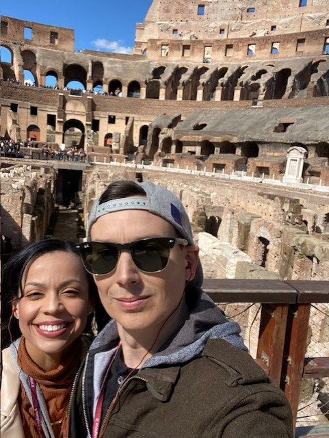
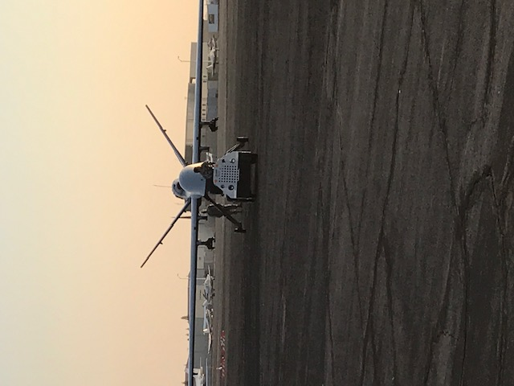

My name is Matt Lynn, and my military callsign is GANDHI. I am a Master Sergeant in the California Air National Guard, serving as a Career Enlisted Aviator on the MQ-9. I have dedicated much of my career to providing classroom and individual instruction to new crew members on the MQ-9. I reside in Southern California with my wife, three children, and an Aussie Doodle.
My educational background includes an Air and Space Technology associate degree from the Community College of the Air Force. I am also nearing the completion of my Bachelor of Science degree in Computer Science from Southwestern College, with only 16 credits remaining. Additionally, I graduated with Academic Achievement and Distinguished Graduate awards from the Advanced Instructor Course at the USAF Weapons School.
I am committed to continuous learning in this rapidly evolving field, particularly in employing artificial intelligence to enhance aviation warfighter capabilities. My career goal is to advance the United States' capabilities in air, space, and cyberspace domains, with a focus on RADAR sensor employment, datalink information sharing, and multispectral targeting systems.
|  | |
|  |
{kind=link}